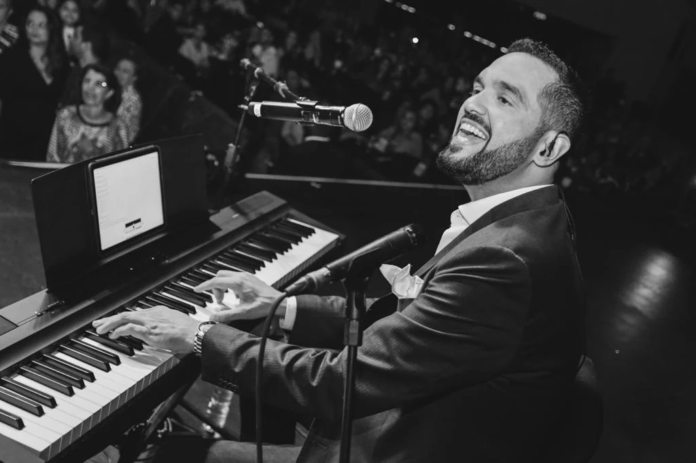
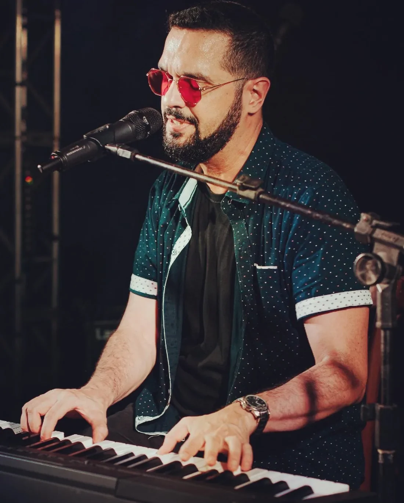

01 — A PROXIMIDADE
I.Piano
Piano
& voz.
A beleza de uma canção bem perto. Voz e piano em um formato intimista, feito para acompanhar recepções, encontros e celebrações.
PARA OUVIR. PARA SENTIR. PARA ESTAR JUNTO.
Há encontros que
começam com uma canção.

O QUE FICA
DEPOIS DA MÚSICA.
No piano e na voz de Rafael Direito, o repertório encontra interpretação, presença e a liberdade de acompanhar cada encontro.
Da conversa perto do piano à festa com todo mundo cantando: a música ocupa o espaço que o seu momento pede.
O REPERTÓRIO DOS ENCONTROS
Escolha um clima.
Deixe a música acontecer.
A beleza de uma canção bem perto. Voz e piano em um formato intimista, feito para acompanhar recepções, encontros e celebrações.
Canções que atravessam gerações, energia que cresce junto com a festa. Com banda ou em formato solo.
Um tributo ao piano, à voz e às histórias de um grande ídolo. Uma noite para cantar, lembrar e se emocionar.

PRESENÇA É O QUE FICA.
É nessa troca entre palco e plateia que cada apresentação ganha sua própria história.
Mais encontros no InstagramRESERVE UM LUGAR PARA A MÚSICA.
Conte a data, o lugar e o que você imagina.
A produção ajuda a encontrar o formato.